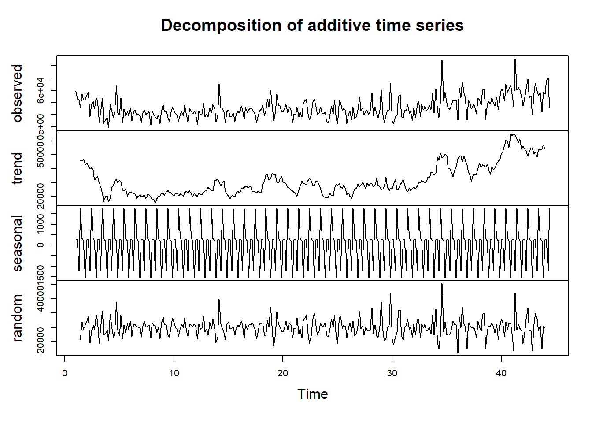
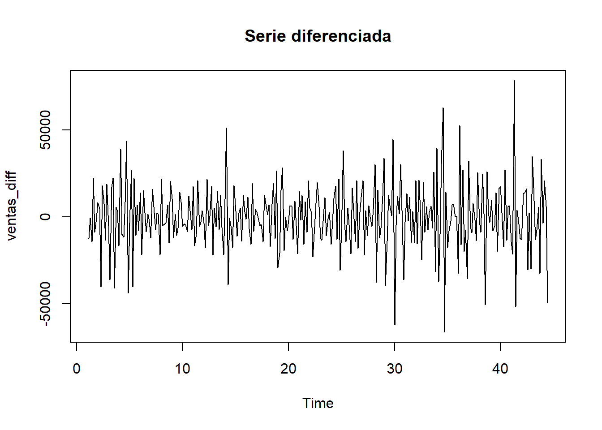
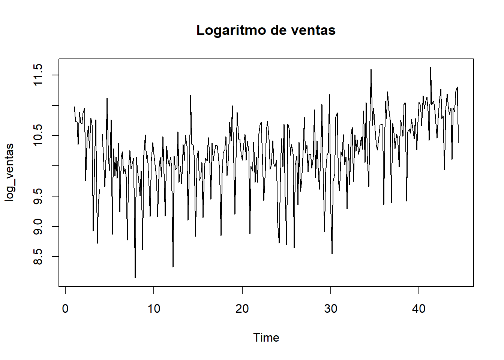

2 Avance 3
2.1 Introduccion
En el avance anterior se analizaron las ventas por día, su promedio móvil, la variación horaria y la autocorrelación de la serie. A partir de estos hallazgos, se procede ahora con un análisis más profundo, sobre la estructura estacional, la estacionariedad de la serie y posibles transformaciones necesarias para estabilizarla.
2.2 Descomposición, Estacionalidad y Estacionariedad
En este avance se continúa con el análisis de la variable ventas en la base de datos Online Retail. Se realiza una descomposición de la serie, se evalúa su estacionalidad, se aplica la prueba de estacionariedad ADF y se implementa la diferenciación si es necesaria, justificando cada paso con base en el comportamiento observado.
2.3 Descomposición de la serie
library(readxl)
library(dplyr)
library(ggplot2)
library(zoo)
library(lubridate)
library(forecast)
# Cargar y procesar datos
datos <- read_excel("Online-Retail.xlsx") %>%
mutate(Fecha = as.Date(InvoiceDate),
ventas = Quantity * UnitPrice) %>%
group_by(Fecha) %>%
summarise(ventas_totales = sum(ventas, na.rm = TRUE))
# Crear serie temporal diaria
ventas_ts <- ts(datos$ventas_totales, frequency = 7) # semanal
# Descomposición aditiva
decomp <- decompose(ventas_ts)
plot(decomp)
Interpretación:
La descomposición aditiva muestra las componentes de la serie: tendencia, estacionalidad y residuos. La tendencia refleja un crecimiento progresivo hacia finales del año, mientras que la estacionalidad muestra oscilaciones semanales propias del comportamiento comercial. Los residuos reflejan fluctuaciones no explicadas por los componentes anteriores.
2.4 Estacionariedad (Prueba ADF)
##
## Adjuntando el paquete: 'aTSA'## The following object is masked from 'package:forecast':
##
## forecast## The following object is masked from 'package:graphics':
##
## identify## Augmented Dickey-Fuller Test
## alternative: stationary
##
## Type 1: no drift no trend
## lag ADF p.value
## [1,] 0 -4.888 0.0100
## [2,] 1 -3.087 0.0100
## [3,] 2 -2.061 0.0404
## [4,] 3 -1.546 0.1264
## [5,] 4 -1.162 0.2636
## [6,] 5 -0.543 0.4848
## Type 2: with drift no trend
## lag ADF p.value
## [1,] 0 -11.65 0.010
## [2,] 1 -8.08 0.010
## [3,] 2 -5.81 0.010
## [4,] 3 -4.80 0.010
## [5,] 4 -3.77 0.010
## [6,] 5 -2.08 0.298
## Type 3: with drift and trend
## lag ADF p.value
## [1,] 0 -13.63 0.0100
## [2,] 1 -9.99 0.0100
## [3,] 2 -7.63 0.0100
## [4,] 3 -6.56 0.0100
## [5,] 4 -5.59 0.0100
## [6,] 5 -3.83 0.0178
## ----
## Note: in fact, p.value = 0.01 means p.value <= 0.01Resultado:
Si el p-valor es mayor a 0.05, se concluye que la serie no es estacionaria. En ese caso, se realiza una diferenciación.
2.5 Diferenciación (si es necesaria)

## Augmented Dickey-Fuller Test
## alternative: stationary
##
## Type 1: no drift no trend
## lag ADF p.value
## [1,] 0 -27.3 0.01
## [2,] 1 -21.1 0.01
## [3,] 2 -16.4 0.01
## [4,] 3 -15.3 0.01
## [5,] 4 -19.4 0.01
## [6,] 5 -12.4 0.01
## Type 2: with drift no trend
## lag ADF p.value
## [1,] 0 -27.2 0.01
## [2,] 1 -21.0 0.01
## [3,] 2 -16.4 0.01
## [4,] 3 -15.2 0.01
## [5,] 4 -19.4 0.01
## [6,] 5 -12.4 0.01
## Type 3: with drift and trend
## lag ADF p.value
## [1,] 0 -27.2 0.01
## [2,] 1 -21.0 0.01
## [3,] 2 -16.4 0.01
## [4,] 3 -15.2 0.01
## [5,] 4 -19.5 0.01
## [6,] 5 -12.5 0.01
## ----
## Note: in fact, p.value = 0.01 means p.value <= 0.01Justificación:
La diferenciación se aplica para eliminar la tendencia y estabilizar la varianza, con el objetivo de obtener una serie estacionaria adecuada para modelado. Si tras diferenciar el p-valor de ADF es menor a 0.05, la serie puede considerarse estacionaria.
2.6 Transformación (opcional)
## Warning in log(ventas_ts): Se han producido NaNs
Observación:
La transformación logarítmica puede ser útil si se observan grandes saltos o escalas muy distintas en la serie original. En este caso, se implementa de forma exploratoria para observar su efecto en la estabilidad de la varianza.
2.7 Conclusión
Este avance permitió analizar la estructura interna de la serie temporal de ventas, destacando la presencia de tendencia creciente y estacionalidad. La prueba de estacionariedad ADF evidenció la necesidad de diferenciar la serie, y se aplicó dicha técnica junto con una transformación logarítmica exploratoria. Estos pasos preparan los datos para futuras fases de modelado y pronóstico más robustas.
2.8 Fuente de datos
Los datos corresponden al conjunto “Online Retail” disponible públicamente en el repositorio de UCI Machine Learning:
https://archive.ics.uci.edu/dataset/352/online+retail